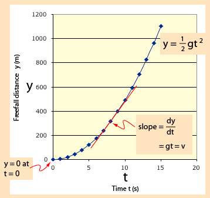
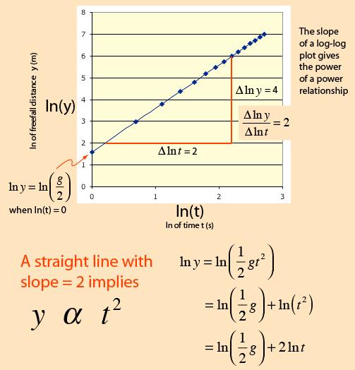

Log Plot for Power Relationships
For linear relationships, the point-slope form of a line can give useful information about the relationships. For variables for which the relationship is some kind of power law, a plot of the logarithms of the variables can help extract information about the power relationship. The case of a freely falling object will be used to illustrate such a plot.
|  | The linear plot is useful for showing the quadratic relationship between distance and time, and the slope of the curve is a measure of the derivative of the distance with respect to time which is the instantaneous velocity. |
A plot of the logarithm of the freefall distance as a function of the logarithm of time yields a straight line of slope 2. The slope of a log-log plot gives the power of the relationship, and a straight line is an indication that a definite power relationship exists.

|